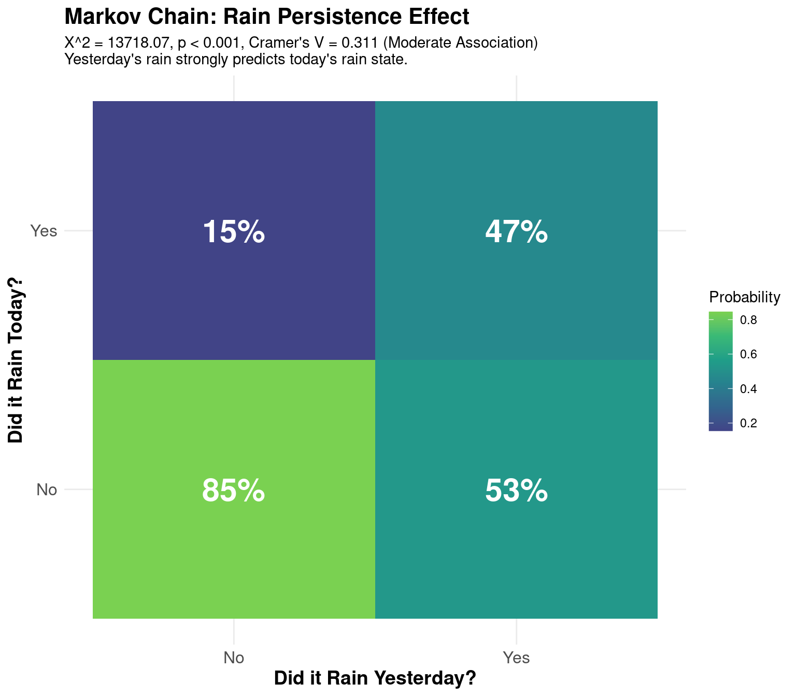
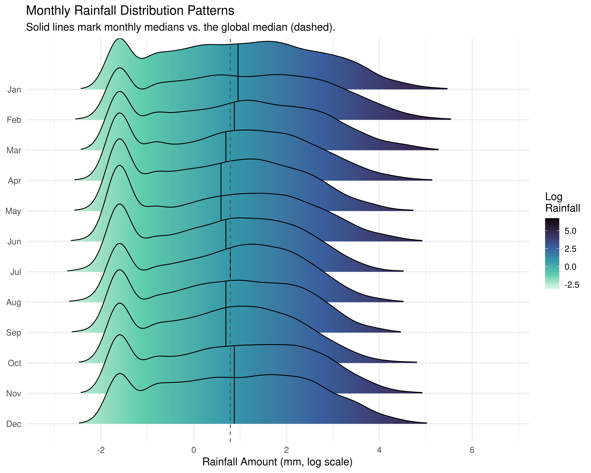
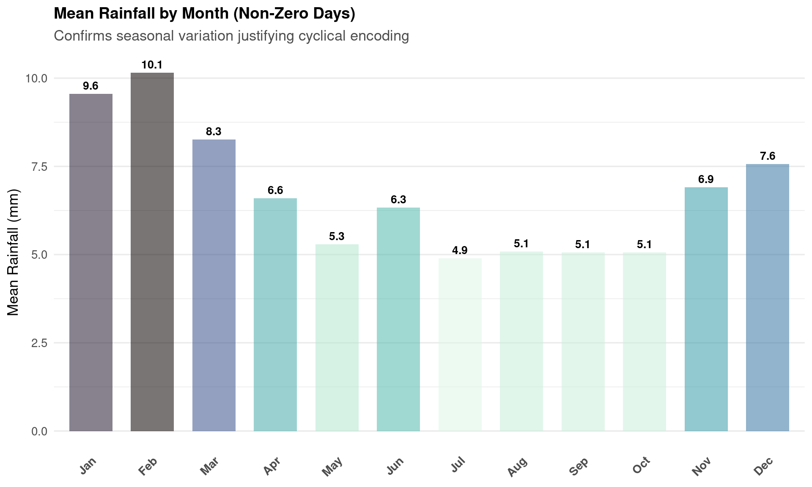
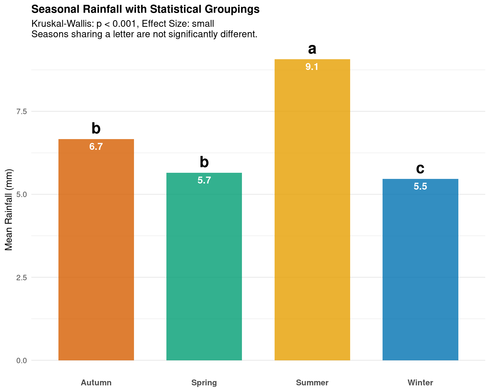
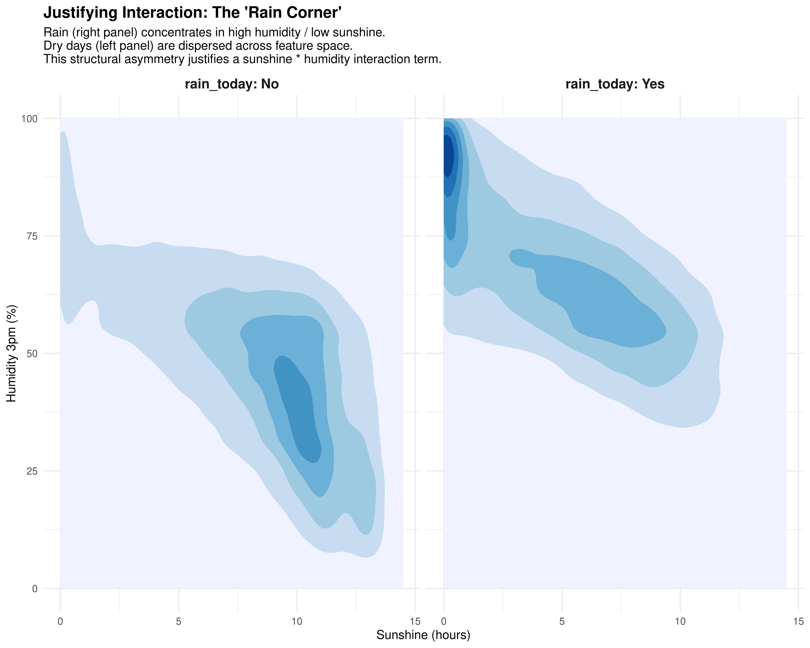

3.1 Temporal and Meteorological Drivers of Australian Rainfall
Chapter Context. This chapter investigates the distributional and structural properties of the daily rainfall data, using findings from the data preparation chapter (Chapter 2) as its starting point rather than repeating the missingness diagnostics performed there. The analyses proceed in a deliberate sequence: target variable distribution, bivariate predictor correlations, temporal dynamics, pressure analysis, seasonal patterns, and feature interactions. Each section produces a specific finding that motivates a corresponding decision in the feature engineering or model specification stages.
3.2 Data Quality Summary
A thorough investigation of missingness is documented in Chapter 2 and summarised briefly here for continuity. The full diagnostic pipeline co-missingness analysis, temporal structural break detection, ghost sensor identification, and a weather-conditionality test established the following picture.
The dataset contains 314,146 missing entries in total, distributed highly unevenly across features. The four most affected variables are sunshine (47.7% missing), evaporation (42.5%), cloud9am (approximately 40%), and cloud3pm (approximately 37%). Their missingness is not independent: co-missing rates between any pair of these four variables range from 67% to 93%, confirming that they fail together at the station level rather than through separate independent sensor faults. This is Missing Not At Random at the station level, driven by instrumentation deployment profiles.
A weather-conditionality test confirmed that sunshine missingness does not covary with rainfall amounts: the missing rate is 47.8% on dry days and 47.2% on rainy days. Missingness is station-conditional rather than outcome-conditional, meaning imputed values do not introduce directional bias into the training labels.
The core dynamic variables pressure, wind speed, temperature, and humidity exhibit missingness below 10% and are available across virtually all observations.
Resolution. A three-stage hybrid imputation pipeline was applied in Chapter 2: binary missingness flags, linear temporal interpolation bounded by a five-day cap, and two-pass Random Forest imputation via missRanger and targeted mice. Ghost sensor observations, station-variable pairs with more than 90% missingness across the full window, were reverted to missing after the pipeline rather than filled with unsupported synthetic values. The imputed dataset df_final is used throughout the remainder of this chapter. The raw dataset df_clean is used only in this opening section, where using pre-imputation data avoids circularity between the imputed features and the response distribution.
Modelling implication. The concentration of missingness in sunshine and evaporation, both of which exhibit meaningful correlation with rainfall, as shown in Section 3.4, creates a direct trade-off: discarding these variables avoids imputation complexity but sacrifices predictive signal, while listwise deletion would eliminate nearly half the dataset and introduce geographic bias toward well-instrumented stations. The Random Forest imputation strategy in Chapter 2 resolves this trade-off by preserving both sample and features.
3.3 Distributional Properties of the Target Variable
Understanding the marginal distribution of the response variable is a prerequisite for selecting an appropriate model family. A Gaussian assumption carries substantive claims about the data-generating process that can be directly tested.
The descriptive statistics reveal a distribution fundamentally incompatible with Gaussian modelling assumptions.
Zero-inflation. 64.05% of the 142,199 recorded observations are dry days (rainfall = 0 mm). The median is zero. The data-generating mechanism genuinely produces two qualitatively different outcomes, no rain at all versus some positive amount and any model treating the response as a single continuous variable will be forced to place probability mass on negative values and will systematically misestimate the probability of the zero outcome.
Heavy tails. Among non-zero observations, the distribution is severely right-skewed (skewness = 9.84). The standard deviation (8.48 mm) is nearly four times the mean (2.36 mm). Kurtosis of 181.15 compared to 3 for a normal distribution confirms that extreme events occur far more frequently than a Gaussian model would predict. The maximum recorded value is 371 mm, and 151 events exceed 100 mm.
Modelling implication. The conjunction of zero-inflation and extreme positive skew means a single-component model is insufficient. The data implicitly poses two separate questions: does rain occur (binary classification) and, given that it does, how much falls (positive continuous regression). This motivates the Zero-Inflated Gamma framework adopted in subsequent analysis.
3.4 Bivariate Correlation Structure
Because rainfall is heavily skewed and the relationships are unlikely to be linear, Spearman rank correlation is used throughout, a non-parametric measure that captures monotonic association without requiring linearity or normality.
Figure 3.1: Spearman Correlation Matrix of Meteorological Features. Red indicates negative correlation; blue indicates positive correlation. Coefficients shown for pairs where |r| > 0.3.
Show the code
cor_humidity <-cor.test( df_clean$rainfall, df_clean$humidity3pm,method ="spearman")cor_sunshine <-cor.test( df_clean$rainfall, df_clean$sunshine,method ="spearman")cocor_result <-cocor.dep.groups.overlap(r.jk = cor_humidity$estimate,r.jh = cor_sunshine$estimate,r.kh =cor( df_clean$humidity3pm, df_clean$sunshine,use ="complete.obs",method ="spearman" ),n =nrow(df_clean),alternative ="two.sided",test ="steiger1980",return.htest =TRUE)print(cocor_result)#> $pearson1898#> #> Pearson and Filon's z (1898)#> #> data: #> #> alternative hypothesis: true difference in correlations is not equal to 0#> sample estimates:#> r.jk.rho r.jh.rho r.kh #> 0.4436352 -0.4013063 -0.6206376 #> #> #> $hotelling1940#> #> Hotelling's t (1940)#> #> data: #> #> alternative hypothesis: true difference in correlations is not equal to 0#> sample estimates:#> r.jk.rho r.jh.rho r.kh #> 0.4436352 -0.4013063 -0.6206376 #> #> #> $williams1959#> #> Williams' t (1959)#> #> data: #> #> alternative hypothesis: true difference in correlations is not equal to 0#> sample estimates:#> r.jk.rho r.jh.rho r.kh #> 0.4436352 -0.4013063 -0.6206376 #> #> #> $hendrickson1970#> #> Hendrickson, Stanley, and Hills' (1970) modification of Williams' t#> (1959)#> #> data: #> #> alternative hypothesis: true difference in correlations is not equal to 0#> sample estimates:#> r.jk.rho r.jh.rho r.kh #> 0.4436352 -0.4013063 -0.6206376 #> #> #> $olkin1967#> #> Olkin's z (1967)#> #> data: #> #> alternative hypothesis: true difference in correlations is not equal to 0#> sample estimates:#> r.jk.rho r.jh.rho r.kh #> 0.4436352 -0.4013063 -0.6206376 #> #> #> $dunn1969#> #> Dunn and Clark's z (1969)#> #> data: #> #> alternative hypothesis: true difference in correlations is not equal to 0#> sample estimates:#> r.jk.rho r.jh.rho r.kh #> 0.4436352 -0.4013063 -0.6206376 #> #> #> $steiger1980#> #> Steiger's (1980) modification of Dunn and Clark's z (1969) using#> average correlations#> #> data: #> z = 188.91, p-value < 2.2e-16#> alternative hypothesis: true difference in correlations is not equal to 0#> sample estimates:#> r.jk.rho r.jh.rho r.kh #> 0.4436352 -0.4013063 -0.6206376 #> #> #> $meng1992#> #> Meng, Rosenthal, and Rubin's z (1992)#> #> data: #> #> alternative hypothesis: true difference in correlations is not equal to 0#> sample estimates:#> r.jk.rho r.jh.rho r.kh #> 0.4436352 -0.4013063 -0.6206376 #> #> #> $hittner2003#> #> Hittner, May, and Silver's (2003) modification of Dunn and Clark's z#> (1969) using a backtransformed average Fisher's (1921) Z procedure#> #> data: #> #> alternative hypothesis: true difference in correlations is not equal to 0#> sample estimates:#> r.jk.rho r.jh.rho r.kh #> 0.4436352 -0.4013063 -0.6206376 #> #> #> $zou2007#> #> Zou's (2007) confidence interval#> #> data: #> #> alternative hypothesis: true difference in correlations is not equal to 0#> sample estimates:#> r.jk.rho r.jh.rho r.kh #> 0.4436352 -0.4013063 -0.6206376
Moisture indicators (positive association).Humidity3pm (\(r = 0.44\)) and cloud cover (\(r \approx 0.37\)) show the strongest positive associations. High afternoon humidity indicates moisture has accumulated in the lower atmosphere over the course of the day. Cloud cover is both a physical precondition for rain and a consequence of the same atmospheric dynamics.
Radiation and evaporation indicators (negative association).Sunshine (\(r = -0.40\)) and evaporation (\(r = -0.31\)) exhibit the strongest negative associations. Long sunshine hours proxy clear-sky, high-pressure conditions. High evaporation signals warm, dry, low-humidity surface conditions.
Multicollinearity. The correlation heatmap (Figure 3.1) reveals substantial redundancy among predictors. pressure9am and pressure3pm share \(r = 0.96\), and the two temperature readings are similarly collinear. This directly motivates VIF-based feature selection in the feature engineering chapter.
Statistical validation. Steiger’s Z-test comparing the two strongest opposing predictors yields \(z \approx 188.9\), \(p < 2.2 \times 10^{-16}\). With \(N > 140,000\), the p-value alone is uninformative; the Z-statistic magnitude confirms the differential predictive strength is not a sampling artefact. Humidity and sunshine represent genuinely distinct physical forces operating in opposing directions.
3.5 Temporal Structure of Rainfall
3.5.1 Weekly and Seasonal Frequency
Show the code
df_clean %>%filter(rainfall >0) %>%tabyl(day) %>%adorn_pct_formatting() %>%arrange(desc(n)) %>%kable(caption ="Frequency of Rainfall Days by Day of the Week",col.names =c("Day", "Count (n)", "Percentage") ) %>%kable_styling(bootstrap_options =c("striped", "hover"), full_width =FALSE)
Frequency of Rainfall Days by Day of the Week
Day
Count (n)
Percentage
Tue
7508
14.7%
Mon
7480
14.6%
Fri
7378
14.4%
Wed
7342
14.4%
Thu
7314
14.3%
Sat
7057
13.8%
Sun
7040
13.8%
Show the code
df_clean %>%filter(rainfall >0) %>%tabyl(month) %>%adorn_pct_formatting() %>%arrange(desc(n)) %>%kable(caption ="Frequency of Rainfall Days by Month",col.names =c("Month", "Count (n)", "Percentage") ) %>%kable_styling(bootstrap_options =c("striped", "hover"), full_width =FALSE)
Cross-tabulation of Rainfall Frequency: Month vs. Day
month
Sun
Mon
Tue
Wed
Thu
Fri
Sat
Total
1
536
570
514
482
493
567
540
3702
2
480
530
469
466
443
471
448
3307
3
636
645
639
592
662
644
626
4444
4
578
597
566
604
579
515
562
4001
5
710
722
765
714
678
681
667
4937
6
766
801
804
797
760
753
767
5448
7
694
717
728
796
773
818
724
5250
8
612
702
694
679
689
687
641
4704
9
516
571
616
639
648
659
585
4234
10
507
606
579
550
517
456
555
3770
11
556
526
554
480
538
575
531
3760
12
449
493
580
543
534
552
411
3562
Total
7040
7480
7508
7342
7314
7378
7057
51119
Weekly cycle. The distribution of wet days across the days of the week is approximately uniform, ranging from 13.8% to 14.7%. This near-uniformity is physically expected: atmospheric processes operate independently of the social calendar. The slight variation is consistent with sampling noise, suggesting Day carries little predictive information.
Annual cycle. June (10.7%) and July (10.3%) record the highest frequency of wet days, consistent with Southern Hemisphere winter frontal systems from the Southern Ocean. February (6.5%) and December (7.0%) record the lowest frequencies. The cross-tabulation confirms this seasonal signal is not an artefact of any particular day of the week. Month is therefore a legitimate predictor warranting explicit model inclusion.
3.5.2 Day-to-Day Persistence: A Markov Chain Analysis
markov_data <- df_final %>%group_by(location) %>%arrange(date) %>%mutate(yesterday_rain =lag(rain_today)) %>%ungroup() %>%filter(!is.na(rain_today), !is.na(yesterday_rain))markov_data %>%count(yesterday_rain, rain_today) %>%group_by(yesterday_rain) %>%mutate(prob = n /sum(n)) %>%ggplot(aes(x = yesterday_rain, y = rain_today, fill = prob)) +geom_tile() +geom_text(aes(label = scales::percent(prob, accuracy =1)),color ="white",size =8,fontface ="bold" ) +scale_fill_viridis_c(option ="viridis", begin =0.2, end =0.8) +labs(title ="Markov Chain: Rain Persistence Effect",subtitle =sprintf("X^2 = %.2f, p < 0.001, Cramer's V = %.3f (Moderate Association)\nYesterday's rain state strongly predicts today's rain state.", chi_result$statistic, cramers_v ),x ="Did it Rain Yesterday?",y ="Did it Rain Today?",fill ="Probability" ) +theme_minimal() +theme(axis.text =element_text(size =12),axis.title =element_text(size =14, face ="bold"),plot.title =element_text(size =16, face ="bold") )

Figure 3.2: Markov Chain Transition Matrix. The asymmetry between dry-to-dry (85%) and wet-to-wet (47%) probabilities is the central finding: dry states are self-reinforcing, wet states are transient.
The Chi-squared test yields \(\chi^2 \approx 13,718\), \(p < 0.001\), rejecting daily independence by a large margin. Cramer’s V (\(V \approx 0.31\)) confirms a moderate practical effect size.
The transition matrix (Figure 3.2) reveals an important asymmetry. When the previous day was dry, there is an 85% probability of remaining dry, high-pressure systems are persistent and self-reinforcing. When the previous day was wet, there is only a 47% probability of continued rain, meaning wet events are more transient. This asymmetry has a direct atmospheric interpretation: anticyclonic systems can persist for days to weeks, while frontal systems pass through more quickly.
rain_today (lagged one day) carries meaningful predictive signal. Its modest effect size also demonstrates that autocorrelation alone is insufficient: the wet state is too transient for a persistence-only rule, and other meteorological covariates are necessary.
Figure 3.3: The drying effect: empirical vs. modelled probability of rainfall by days since last rain. The rapid initial decline followed by a plateau motivates a spline parameterisation rather than a linear logistic term.
A logistic regression of daily rain occurrence on days_since_rain yields \(OR = 0.835\) (Wald \(\chi^2 \approx 8099\), \(p < 0.001\)): each additional dry day reduces the odds of rainfall by approximately 16.5%. This is consistent with the progressive establishment of stable high-pressure ridges documented in the Markov analysis.
The linear model is however an approximation. The LRT against a four-knot natural spline is highly significant (\(\chi^2 \approx 7678\), \(p < 0.001\)). The empirical pattern (Figure 3.3) shows rain probability falling sharply from approximately 48% on Day 1 to around 18% by Day 10, then plateauing in the 12–16% range through Days 15 to 30. The linear model underestimates the initial steepness and overestimates long-drought decline rates. This “rapid-then-gradual” decay motivates a spline parameterisation of days_since_rain rather than a simple linear term.
Figure 3.5: Mean pressure levels and diurnal drop by rainfall state. The suppressed pressure drop on rainy days (1.3 vs. 2.7 hPa) is a stronger discriminating signal than the absolute pressure baseline.
Normality. Q-Q plots show modest tail deviations, but with \(N > 140,000\) the CLT ensures normally distributed sample means. Welch’s t-test is therefore valid without equal-variance assumptions, and Bonferroni-Holm correction is applied for multiple comparisons.
Baseline pressure. Rainy days show mean pressure of 1015 hPa at 9:00 AM versus 1018.5 hPa on dry days. Cohen’s \(d \approx 0.28\)–\(0.48\) represents a small-to-medium effect, consistent with absolute pressure being necessary but not sufficient for rain.
Diurnal pressure change. On dry days, pressure drops 2.7 hPa from morning to afternoon, the standard thermal low from daytime surface heating. On rainy days, this drop is suppressed to 1.3 hPa, because cloud cover reduces insolation. Cohen’s \(d = -0.72\) for pressure_change is a medium effect, stronger than either absolute pressure reading individually. The rate of pressure change during the day is the more discriminating feature.
ggplot(plot_data, aes(log_rain, month_label, fill =after_stat(x))) +geom_density_ridges_gradient(scale =2.5,rel_min_height =0.01,quantile_lines =TRUE,quantiles =2,alpha =0.8 ) +geom_vline(xintercept =median(log(df_final$rainfall[df_final$rainfall >0])),linetype ="dashed",color ="grey30",linewidth =0.5 ) +scale_fill_viridis_c(option ="mako",name ="Log\nRainfall",direction =-1 ) +scale_x_continuous(breaks =pretty_breaks()) +labs(title ="Monthly Rainfall Distribution Patterns",subtitle ="Solid lines mark monthly medians vs. the global median (dashed).",x ="Rainfall Amount (mm, log scale)",y =NULL ) +theme_minimal(base_size =13)

Figure 3.6: Ridgeline plot of monthly log-rainfall distributions. Shifting peaks illustrate how rainfall intensity varies cyclically relative to the global median (dashed line).
Figure 3.7: Seasonal rainfall patterns by meteorological season. Summer exhibits high variance and a pronounced right tail; winter shows narrower, more predictable distributions.
Show the code
monthly_stats %>%mutate(month_label =factor(month.abb[month], levels = month.abb)) %>%ggplot(aes(month_label, mean_rain)) +geom_col(aes(fill = mean_rain, alpha =0.8), width =0.7) +geom_text(aes(label =round(mean_rain, 1)),vjust =-0.5,size =3.5,fontface ="bold" ) +scale_fill_viridis_c(option ="mako", direction =-1) +labs(title ="Mean Rainfall by Month (Non-Zero Days)",subtitle ="Seasonal variation in intensity is distinct from seasonal variation in frequency",y ="Mean Rainfall (mm)",x =NULL ) +theme_minimal(base_size =13) +theme(plot.title =element_text(face ="bold", size =14),legend.position ="none",panel.grid.major.x =element_blank(),axis.text.x =element_text(angle =45, hjust =1, face ="bold") )

Figure 3.8: Average rainfall intensity on non-zero days by month. February records the highest mean intensity at 10.1 mm, nearly double July’s 4.9 mm.
The earlier frequency analysis (Section 3.5.1) established when rain tends to occur. This section investigates how much falls when it does.
January and February distributions are shifted systematically right of the global median: summer storms are considerably more intense when they arrive, even though they occur less frequently. June through August cluster left, representing lower but more consistent rainfall. February records the highest mean intensity per wet day at 10.1 mm, nearly double July’s 4.9 mm.
Summer rainfall has a wide interquartile range and a pronounced right tail beyond 100 mm per day, reflecting episodic convective storms. Winter shows a narrower, more peaked distribution. Both the frequency variation (more rain in winter) and the intensity variation (heavier rain in summer) carry independent information; a complete model must account for both dimensions.
Encoding implication. Because the seasonal cycle is continuous the transition from December to January is climatologically smooth treating Month as unordered discards proximity information. Cyclical encoding via sine and cosine transformations of the month number preserves the circular geometry of the annual cycle.
3.7.2 Statistical Validation
Show the code
seasonal_data %>%select(season, rainfall) %>%group_by(season) %>%get_summary_stats(rainfall, type ="mean_sd") %>%kable(caption ="Descriptive Statistics of Rainfall Intensity by Season",col.names =c("Season", "Variable", "N (Events)", "Mean (mm)", "SD (mm)") ) %>%kable_styling(bootstrap_options =c("striped", "hover"), full_width =FALSE)
Descriptive Statistics of Rainfall Intensity by Season
Dunn's Pairwise Comparison Test (Bonferroni Corrected)
Group 1
Group 2
Z-Statistic
Adj. P-Value
Significance
Summer
Autumn
-11.4684561
0.0000000
****
Summer
Winter
-14.4832877
0.0000000
****
Summer
Spring
-11.0494713
0.0000000
****
Autumn
Winter
-2.8512817
0.0261260
*
Autumn
Spring
0.0912015
1.0000000
ns
Winter
Spring
2.8459539
0.0265672
*
Show the code
p_vals <- dunn_result$p.adjnames(p_vals) <-paste(dunn_result$group1, dunn_result$group2, sep ="-")letters_vec <-multcompLetters(p_vals)$Lettersletters_df <-data.frame(season =names(letters_vec), Letter = letters_vec)seasonal_data %>%group_by(season) %>%summarise(mean_rain =mean(rainfall, na.rm =TRUE), n =n()) %>%left_join(letters_df, by ="season") %>%ggplot(aes(x = season, y = mean_rain, fill = season)) +geom_col(alpha =0.8, width =0.7) +geom_text(aes(label = Letter), vjust =-0.5, size =8, fontface ="bold") +geom_text(aes(label =round(mean_rain, 1)),vjust =1.5,color ="white",fontface ="bold",size =5 ) +scale_fill_manual(values =c("Summer"="#E69F00","Autumn"="#D55E00","Winter"="#0072B2","Spring"="#009E73" ) ) +labs(title ="Seasonal Rainfall with Statistical Groupings",subtitle =sprintf("Kruskal-Wallis: p < 0.001, Effect Size: %s\nSeasons sharing a letter are not significantly different.",as.character(epsilon_sq$magnitude) ),y ="Mean Rainfall (mm)",x =NULL ) +theme_minimal(base_size =14) +theme(legend.position ="none",plot.title =element_text(face ="bold", size =16),axis.text.x =element_text(size =12, face ="bold"),panel.grid.major.x =element_blank() )

Figure 3.9: Mean seasonal rainfall with statistical groupings. Shared letters indicate seasons not significantly different from one another (Dunn’s test, p < 0.05).
The Kruskal-Wallis test yields \(\chi^2 = 230\), \(p < 0.001\), strongly rejecting the null. The epsilon-squared effect size (\(\eta^2 \approx 0.004\)) is small the seasonal signal is real but accounts for only a minor fraction of total variance in rainfall intensity, reinforcing the necessity of a multivariate approach.
Post-hoc Dunn’s tests identify three distinct statistical groups (Figure 3.9). Summer stands alone as the most intense season (\(\bar{x} = 9.1\) mm, \(p < 0.001\) vs. all others). Autumn and Spring are statistically indistinguishable (\(p = 1.0\)). Winter registers the lowest mean intensity (\(\bar{x} = 5.5\) mm) and is statistically distinct from Spring (\(p_\text{adj} = 0.026\)).
3.8 Feature Interactions: The “Rain Corner”
Show the code
df_final %>%group_by(location) %>%arrange(date) %>%mutate(rain_index_ref =ifelse(rainfall >0, row_number(), NA_integer_)) %>%fill(rain_index_ref, .direction ="down") %>%mutate(days_since_rain =row_number() -lag(rain_index_ref)) %>%select(-rain_index_ref) %>%ggplot(aes(sunshine, humidity3pm)) +geom_density2d_filled(continuous_var ="ndensity", bins =7) +facet_wrap(~rain_today, labeller = label_both) +scale_fill_brewer(palette ="Blues") +labs(title ="Justifying Interaction: The 'Rain Corner'",subtitle ="Rain (right panel) concentrates in high humidity / low sunshine.\nDry days (left panel) are dispersed across feature space.\nThis structural asymmetry justifies a sunshine * humidity interaction term.",x ="Sunshine (hours)",y ="Humidity 3pm (%)" ) +theme_minimal() +theme(legend.position ="none",strip.text =element_text(size =12, face ="bold"),plot.title =element_text(size =14, face ="bold") )

Figure 3.10: Bivariate density of Humidity3pm vs. Sunshine, faceted by rainfall occurrence. Rain events concentrate tightly in the upper-left ‘Rain Corner’ (high humidity, low sunshine), while dry days are dispersed broadly. This structural asymmetry justifies a multiplicative interaction term.
The correlation analysis in Section 3.4 established that humidity and sunshine are individually among the strongest predictors. A standard additive model treats their effects as independent. This section tests whether that assumption holds.
The bivariate density plots (Figure 3.10) reveal a striking structural difference. On dry days, the density is dispersed broadly across the humidity-sunshine space: high humidity can occur without rain under high-pressure suppression, and low sunshine can occur without rain under thin overcast. No single region clearly separates the two states.
On rainy days, the density collapses into a tight cluster in the upper-left quadrant: high afternoon humidity (above approximately 50%) combined with low sunshine (below approximately 5 hours). This is the “Rain Corner”. Neither condition alone is sufficient; both must coincide simultaneously. This is statistical interaction: the effect of one variable on the outcome is conditional on the level of the other.
Modelling implication. An additive model that includes Humidity3pm and Sunshine as separate terms cannot express the idea that their joint occurrence not their individual magnitudes is what matters. Capturing the Rain Corner requires a multiplicative interaction term (\(\text{Humidity} \times \text{Sunshine}\)) in the model specification.
3.9 Summary and Modelling Implications
The preceding analyses characterise the dataset along six interconnected dimensions, each producing a specific modelling requirement.
The distributional structure of the target variable 64% zeros, extreme positive skew, kurtosis of 181 rules out any single-component Gaussian model. A two-part framework separating occurrence from intensity is the appropriate response.
The missingness analysis (documented in Chapter 2, summarised in Section 1 above) establishes that imputation is necessary to preserve both sample size and the predictive signal in sunshine and evaporation, and that the imputed values do not introduce outcome-related bias.
The correlation structure identifies humidity, cloud cover, sunshine, and evaporation as the strongest individual predictors, and flags severe multicollinearity among morning-afternoon pairs. VIF-based feature selection is required.
The temporal analyses establish that both the day-to-day Markov state and the cumulative dry spell duration carry predictive signal. Month should be cyclically encoded. The dry spell decay is non-linear and warrants a natural spline parameterisation of days_since_rain.
The pressure analysis identifies the diurnal pressure change as the more discriminating pressure-derived feature, with Cohen’s \(d = 0.72\) separating rainy from dry days more effectively than absolute pressure level.
The interaction analysis provides empirical justification for a \(\text{Humidity} \times \text{Sunshine}\) interaction term, reflecting the physical reality that precipitation concentrates where high moisture and low solar radiation coincide in the “Rain Corner” of the feature space.
Source Code
# Exploratory Data Analysis {#sec-eda}## Temporal and Meteorological Drivers of Australian Rainfall---> **Chapter Context.** This chapter investigates the distributional and structural properties of the daily rainfall data, using findings from the data preparation chapter (@sec-data) as its starting point rather than repeating the missingness diagnostics performed there. The analyses proceed in a deliberate sequence: target variable distribution, bivariate predictor correlations, temporal dynamics, pressure analysis, seasonal patterns, and feature interactions. Each section produces a specific finding that motivates a corresponding decision in the feature engineering or model specification stages.---```{r}#| label: setup-eda#| include: falselibrarian::shelf( tidyverse, janitor, kableExtra, ggridges, here, rstatix, moments, cocor, broom, aod, multcompView, scales, patchwork)df_clean <-readRDS(here::here("data", "df_clean.rds"))df_final <-read_csv(here::here("data", "df_final.csv"))source(here::here("utils.R"))```---## Data Quality Summary {#sec-data-quality}A thorough investigation of missingness is documented in @sec-data and summarised briefly here for continuity. The full diagnostic pipeline co-missingness analysis, temporal structural break detection, ghost sensor identification, and a weather-conditionality test established the following picture.The dataset contains 314,146 missing entries in total, distributed highly unevenly across features. The four most affected variables are `sunshine` (47.7% missing), `evaporation` (42.5%), `cloud9am` (approximately 40%), and `cloud3pm` (approximately 37%). Their missingness is not independent: co-missing rates between any pair of these four variables range from 67% to 93%, confirming that they fail together at the station level rather than through separate independent sensor faults. This is Missing Not At Random at the station level, driven by instrumentation deployment profiles.A weather-conditionality test confirmed that sunshine missingness does not covary with rainfall amounts: the missing rate is 47.8% on dry days and 47.2% on rainy days. Missingness is station-conditional rather than outcome-conditional, meaning imputed values do not introduce directional bias into the training labels.The core dynamic variables pressure, wind speed, temperature, and humidity exhibit missingness below 10% and are available across virtually all observations.```{r}#| label: missing-values-summary#| echo: true#| message: false#| warning: falsetotal_na <-sum(is.na(df_clean))print(paste("Total missing values:", total_na))missing_val(df_clean)```**Resolution.** A three-stage hybrid imputation pipeline was applied in @sec-data: binary missingness flags, linear temporal interpolation bounded by a five-day cap, and two-pass Random Forest imputation via `missRanger` and targeted `mice`. Ghost sensor observations, station-variable pairs with more than 90% missingness across the full window, were reverted to missing after the pipeline rather than filled with unsupported synthetic values. The imputed dataset `df_final` is used throughout the remainder of this chapter. The raw dataset `df_clean` is used only in this opening section, where using pre-imputation data avoids circularity between the imputed features and the response distribution.**Modelling implication.** The concentration of missingness in `sunshine` and `evaporation`, both of which exhibit meaningful correlation with rainfall, as shown in @sec-correlation, creates a direct trade-off: discarding these variables avoids imputation complexity but sacrifices predictive signal, while listwise deletion would eliminate nearly half the dataset and introduce geographic bias toward well-instrumented stations. The Random Forest imputation strategy in @sec-data resolves this trade-off by preserving both sample and features.---## Distributional Properties of the Target VariableUnderstanding the marginal distribution of the response variable is a prerequisite for selecting an appropriate model family. A Gaussian assumption carries substantive claims about the data-generating process that can be directly tested.```{r}#| label: target-stats#| echo: true#| message: false#| warning: falserainfall_stats <- df_clean %>%summarise(n =n(),mean =mean(rainfall),median =median(rainfall),sd =sd(rainfall),min =min(rainfall),max =max(rainfall),q25 =quantile(rainfall, 0.25),q75 =quantile(rainfall, 0.75),iqr =IQR(rainfall),n_zeros =sum(rainfall ==0),pct_zeros =mean(rainfall ==0) *100,n_large =sum(rainfall >100),pct_large =mean(rainfall >100) *100,skewness = moments::skewness(rainfall),kurtosis = moments::kurtosis(rainfall) )rainfall_stats %>%pivot_longer(everything(), names_to ="Statistic", values_to ="Value") %>%mutate(Value =ifelse( Value >1000,format(Value, scientific =TRUE, digits =3),round(Value, 3) ) ) %>%kable(caption ="Descriptive Statistics: Daily Rainfall (mm)",align ="lr" ) %>%kable_styling(bootstrap_options =c("striped", "hover"), full_width =FALSE)rain_check <- df_clean %>%summarise(total_days =n(),dry_days =sum(rainfall ==0),rainy_days =sum(rainfall >0),zero_inflation_pct = (dry_days / total_days) *100 )rain_check %>%kable(caption ="Prevalence of Zero-Inflation (Dry Days)",col.names =c("Total Days","Dry Days (0mm)","Rainy Days (>0mm)","Zero Inflation (%)" ) ) %>%kable_styling(bootstrap_options =c("striped", "bordered"),full_width =FALSE )```The descriptive statistics reveal a distribution fundamentally incompatible with Gaussian modelling assumptions.**Zero-inflation.** 64.05% of the 142,199 recorded observations are dry days (rainfall = 0 mm). The median is zero. The data-generating mechanism genuinely produces two qualitatively different outcomes, no rain at all versus some positive amount and any model treating the response as a single continuous variable will be forced to place probability mass on negative values and will systematically misestimate the probability of the zero outcome.**Heavy tails.** Among non-zero observations, the distribution is severely right-skewed (skewness = 9.84). The standard deviation (8.48 mm) is nearly four times the mean (2.36 mm). Kurtosis of 181.15 compared to 3 for a normal distribution confirms that extreme events occur far more frequently than a Gaussian model would predict. The maximum recorded value is 371 mm, and 151 events exceed 100 mm.**Modelling implication.** The conjunction of zero-inflation and extreme positive skew means a single-component model is insufficient. The data implicitly poses two separate questions: does rain occur (binary classification) and, given that it does, how much falls (positive continuous regression). This motivates the Zero-Inflated Gamma framework adopted in subsequent analysis.---## Bivariate Correlation Structure {#sec-correlation}Because rainfall is heavily skewed and the relationships are unlikely to be linear, Spearman rank correlation is used throughout, a non-parametric measure that captures monotonic association without requiring linearity or normality.```{r}#| label: correlation-table#| echo: true#| message: false#| warning: falsenumeric_cols <- df_clean %>%select(where(is.numeric)) %>%names()numeric_cols <- numeric_cols[numeric_cols !="rainfall"]cors <- df_clean %>% rstatix::cor_test(vars ="rainfall",vars2 = numeric_cols,method ="spearman" ) %>%filter(!is.na(cor)) %>%arrange(desc(abs(cor))) %>% dplyr::select(var2, cor, p) %>%mutate(interpretation =case_when(abs(cor) <0.1~"Negligible",abs(cor) <0.3~"Small",abs(cor) <0.5~"Moderate",TRUE~"Large" ) )cors %>%kable(caption ="Spearman Correlation with Rainfall (Ranked by Strength)",col.names =c("Predictor", "Correlation (r)", "P-Value", "Strength") ) %>%kable_styling(bootstrap_options =c("striped", "hover"), full_width =FALSE)``````{r}#| label: fig-correlation-matrix#| fig-cap: "Spearman Correlation Matrix of Meteorological Features. Red indicates negative correlation; blue indicates positive correlation. Coefficients shown for pairs where |r| > 0.3."#| fig-width: 10#| fig-height: 8#| echo: true#| warning: falsecor_matrix <- df_clean %>%select(where(is.numeric)) %>%cor(use ="pairwise.complete.obs", method ="spearman")cor_melt <- cor_matrix %>%as.data.frame() %>%rownames_to_column(var ="Var1") %>%pivot_longer(cols =-Var1, names_to ="Var2", values_to ="Correlation")cor_melt %>%ggplot(aes(x = Var1, y = Var2, fill = Correlation)) +geom_tile(color ="white") +scale_fill_gradient2(low ="#D73027",mid ="white",high ="#4575B4",midpoint =0,limit =c(-1, 1),name ="Spearman\nCorrelation" ) +theme_minimal() +theme(axis.text.x =element_text(angle =45, vjust =1, size =10, hjust =1),axis.text.y =element_text(size =10),axis.title =element_blank(),panel.grid.major =element_blank(),legend.position ="right" ) +geom_text(data =filter(cor_melt, abs(Correlation) >0.3),aes(label =round(Correlation, 2)),color ="black",size =3 ) +labs(title ="Feature Correlation Matrix",subtitle ="Strongest predictors: Humidity (positive) and Sunshine (negative)" )``````{r}#| label: correlation-significance-test#| echo: true#| collapse: truecor_humidity <-cor.test( df_clean$rainfall, df_clean$humidity3pm,method ="spearman")cor_sunshine <-cor.test( df_clean$rainfall, df_clean$sunshine,method ="spearman")cocor_result <-cocor.dep.groups.overlap(r.jk = cor_humidity$estimate,r.jh = cor_sunshine$estimate,r.kh =cor( df_clean$humidity3pm, df_clean$sunshine,use ="complete.obs",method ="spearman" ),n =nrow(df_clean),alternative ="two.sided",test ="steiger1980",return.htest =TRUE)print(cocor_result)```**Moisture indicators (positive association).** `Humidity3pm` ($r = 0.44$) and cloud cover ($r \approx 0.37$) show the strongest positive associations. High afternoon humidity indicates moisture has accumulated in the lower atmosphere over the course of the day. Cloud cover is both a physical precondition for rain and a consequence of the same atmospheric dynamics.**Radiation and evaporation indicators (negative association).** `Sunshine` ($r = -0.40$) and `evaporation` ($r = -0.31$) exhibit the strongest negative associations. Long sunshine hours proxy clear-sky, high-pressure conditions. High evaporation signals warm, dry, low-humidity surface conditions.**Multicollinearity.** The correlation heatmap (@fig-correlation-matrix) reveals substantial redundancy among predictors. `pressure9am` and `pressure3pm` share $r = 0.96$, and the two temperature readings are similarly collinear. This directly motivates VIF-based feature selection in the feature engineering chapter.**Statistical validation.** Steiger's Z-test comparing the two strongest opposing predictors yields $z \approx 188.9$, $p < 2.2 \times 10^{-16}$. With $N > 140,000$, the p-value alone is uninformative; the Z-statistic magnitude confirms the differential predictive strength is not a sampling artefact. Humidity and sunshine represent genuinely distinct physical forces operating in opposing directions.---## Temporal Structure of Rainfall### Weekly and Seasonal Frequency {#sec-frequency}```{r}#| label: temporal-dist#| echo: true#| message: false#| warning: falsedf_clean %>%filter(rainfall >0) %>%tabyl(day) %>%adorn_pct_formatting() %>%arrange(desc(n)) %>%kable(caption ="Frequency of Rainfall Days by Day of the Week",col.names =c("Day", "Count (n)", "Percentage") ) %>%kable_styling(bootstrap_options =c("striped", "hover"), full_width =FALSE)df_clean %>%filter(rainfall >0) %>%tabyl(month) %>%adorn_pct_formatting() %>%arrange(desc(n)) %>%kable(caption ="Frequency of Rainfall Days by Month",col.names =c("Month", "Count (n)", "Percentage") ) %>%kable_styling(bootstrap_options =c("striped", "hover"), full_width =FALSE)df_clean %>%filter(rainfall >0) %>%tabyl(month, day) %>%adorn_totals(c("row", "col")) %>%kable(caption ="Cross-tabulation of Rainfall Frequency: Month vs. Day") %>%kable_styling(bootstrap_options =c("striped", "condensed"),font_size =11 ) %>%scroll_box(width ="100%")```**Weekly cycle.** The distribution of wet days across the days of the week is approximately uniform, ranging from 13.8% to 14.7%. This near-uniformity is physically expected: atmospheric processes operate independently of the social calendar. The slight variation is consistent with sampling noise, suggesting `Day` carries little predictive information.**Annual cycle.** June (10.7%) and July (10.3%) record the highest frequency of wet days, consistent with Southern Hemisphere winter frontal systems from the Southern Ocean. February (6.5%) and December (7.0%) record the lowest frequencies. The cross-tabulation confirms this seasonal signal is not an artefact of any particular day of the week. `Month` is therefore a legitimate predictor warranting explicit model inclusion.### Day-to-Day Persistence: A Markov Chain Analysis {#sec-markov}```{r}#| label: markov-prep#| echo: true#| message: false#| warning: falsemarkov_table <- df_final %>%group_by(location) %>%arrange(date) %>%mutate(yesterday_rain =lag(rain_today)) %>%ungroup() %>%filter(!is.na(rain_today), !is.na(yesterday_rain)) %>%count(yesterday_rain, rain_today)cont_table <- markov_table %>%pivot_wider(names_from = rain_today, values_from = n, values_fill =0) %>%column_to_rownames("yesterday_rain") %>%as.matrix()print(cont_table)``````{r}#| label: markov-stats#| echo: true#| collapse: truechi_result <-chisq_test(as.table(cont_table))print(chi_result)cramers_v <-cramer_v(cont_table)cat("\nEffect Size Interpretation\n")cat(sprintf("V = %.4f: ", cramers_v))if (cramers_v <0.1) {cat("Negligible Association\n")} elseif (cramers_v <0.3) {cat("Weak Association\n")} elseif (cramers_v <0.5) {cat("Moderate Association\n")} else {cat("Strong Association\n")}``````{r}#| label: fig-markov-chain#| fig-cap: "Markov Chain Transition Matrix. The asymmetry between dry-to-dry (85%) and wet-to-wet (47%) probabilities is the central finding: dry states are self-reinforcing, wet states are transient."#| fig-width: 8#| fig-height: 7#| echo: true#| warning: falsemarkov_data <- df_final %>%group_by(location) %>%arrange(date) %>%mutate(yesterday_rain =lag(rain_today)) %>%ungroup() %>%filter(!is.na(rain_today), !is.na(yesterday_rain))markov_data %>%count(yesterday_rain, rain_today) %>%group_by(yesterday_rain) %>%mutate(prob = n /sum(n)) %>%ggplot(aes(x = yesterday_rain, y = rain_today, fill = prob)) +geom_tile() +geom_text(aes(label = scales::percent(prob, accuracy =1)),color ="white",size =8,fontface ="bold" ) +scale_fill_viridis_c(option ="viridis", begin =0.2, end =0.8) +labs(title ="Markov Chain: Rain Persistence Effect",subtitle =sprintf("X^2 = %.2f, p < 0.001, Cramer's V = %.3f (Moderate Association)\nYesterday's rain state strongly predicts today's rain state.", chi_result$statistic, cramers_v ),x ="Did it Rain Yesterday?",y ="Did it Rain Today?",fill ="Probability" ) +theme_minimal() +theme(axis.text =element_text(size =12),axis.title =element_text(size =14, face ="bold"),plot.title =element_text(size =16, face ="bold") )```The Chi-squared test yields $\chi^2 \approx 13,718$, $p < 0.001$, rejecting daily independence by a large margin. Cramer's V ($V \approx 0.31$) confirms a moderate practical effect size.The transition matrix (@fig-markov-chain) reveals an important asymmetry. When the previous day was dry, there is an 85% probability of remaining dry, high-pressure systems are persistent and self-reinforcing. When the previous day was wet, there is only a 47% probability of continued rain, meaning wet events are more transient. This asymmetry has a direct atmospheric interpretation: anticyclonic systems can persist for days to weeks, while frontal systems pass through more quickly.`rain_today` (lagged one day) carries meaningful predictive signal. Its modest effect size also demonstrates that autocorrelation alone is insufficient: the wet state is too transient for a persistence-only rule, and other meteorological covariates are necessary.### Dry Spell Dynamics and Temporal Decay {#sec-dry-spell}```{r}#| label: dry-spell-prep#| echo: true#| message: false#| warning: falsedry_spell_data <- df_final %>%group_by(location) %>%arrange(date) %>%mutate(did_rain_yesterday =lag(rainfall >0, default =FALSE),dry_spell_id =cumsum(did_rain_yesterday) ) %>%group_by(location, dry_spell_id) %>%mutate(days_since_rain =row_number()) %>%ungroup() %>%filter(days_since_rain <=30) %>%mutate(rain_binary =as.numeric(rainfall >0))``````{r}#| label: dry-spell-model#| echo: true#| collapse: truelogit_model <-glm( rain_binary ~ days_since_rain,data = dry_spell_data,family =binomial(link ="logit"))wald_test <- aod::wald.test(b =coef(logit_model),Sigma =vcov(logit_model),Terms =2)or_results <-tidy(logit_model, conf.int =TRUE, exponentiate =TRUE) %>%filter(term =="days_since_rain")print(wald_test)cat(sprintf("\nFor each additional day without rain, odds of rainfall decrease by %.1f%%\n", (1- or_results$estimate) *100))cat(sprintf("95%% CI: [%.3f, %.3f]\n", or_results$conf.low, or_results$conf.high))``````{r}#| label: dry-spell-spline#| echo: true#| collapse: truelogit_spline <-glm( rain_binary ~ splines::ns(days_since_rain, df =4),data = dry_spell_data,family = binomial)lrt_result <-anova(logit_model, logit_spline, test ="LRT")print(lrt_result)``````{r}#| label: fig-dry-spell#| fig-cap: "The drying effect: empirical vs. modelled probability of rainfall by days since last rain. The rapid initial decline followed by a plateau motivates a spline parameterisation rather than a linear logistic term."#| fig-width: 9#| fig-height: 7#| echo: true#| warning: falsepred_data <-data.frame(days_since_rain =1:30)pred_data$pred_prob <-predict( logit_model,newdata = pred_data,type ="response")pred_data$pred_se <-predict( logit_model,newdata = pred_data,type ="response",se.fit =TRUE)$se.fitempirical_probs <- dry_spell_data %>%group_by(days_since_rain) %>%summarise(prob_rain =mean(rain_binary, na.rm =TRUE),n =n(),se =sqrt(prob_rain * (1- prob_rain) / n) )ggplot() +geom_ribbon(data = pred_data,aes(x = days_since_rain,ymin = pred_prob -1.96* pred_se,ymax = pred_prob +1.96* pred_se ),alpha =0.2,fill ="firebrick" ) +geom_line(data = pred_data,aes(x = days_since_rain, y = pred_prob),color ="firebrick",size =1.2,linetype ="dashed" ) +geom_pointrange(data = empirical_probs,aes(x = days_since_rain,y = prob_rain,ymin = prob_rain -1.96* se,ymax = prob_rain +1.96* se ),size =0.5,color ="black" ) +scale_y_continuous(labels = scales::percent_format(1),breaks =pretty_breaks(n =6) ) +scale_x_continuous(breaks = scales::pretty_breaks()) +labs(x ="Days Since Last Rain",y ="Probability of Rainfall",title ="Dry Spell Effect on Rain Probability",subtitle =sprintf("Logistic Regression: B = %.4f, Wald chi2 = %.2f, p < 0.001\nEach additional dry day reduces odds of rain by %.1f%%",coef(logit_model)[2], wald_test$result$chi2[1], (1- or_results$estimate) *100 ),caption ="Points: Empirical probabilities +/- 95% CI | Line: Logistic model fit" ) +theme_minimal()```A logistic regression of daily rain occurrence on `days_since_rain` yields $OR = 0.835$ (Wald $\chi^2 \approx 8099$, $p < 0.001$): each additional dry day reduces the odds of rainfall by approximately 16.5%. This is consistent with the progressive establishment of stable high-pressure ridges documented in the Markov analysis.The linear model is however an approximation. The LRT against a four-knot natural spline is highly significant ($\chi^2 \approx 7678$, $p < 0.001$). The empirical pattern (@fig-dry-spell) shows rain probability falling sharply from approximately 48% on Day 1 to around 18% by Day 10, then plateauing in the 12–16% range through Days 15 to 30. The linear model underestimates the initial steepness and overestimates long-drought decline rates. This "rapid-then-gradual" decay motivates a spline parameterisation of `days_since_rain` rather than a simple linear term.---## Atmospheric Pressure Dynamics```{r}#| label: pressure-prep-normality#| echo: true#| message: false#| warning: falsepressure_data <- df_final %>%mutate(pressure_change = pressure3pm - pressure9am) %>%select(rain_today, pressure9am, pressure3pm, pressure_change) %>%filter(!is.na(pressure9am), !is.na(rain_today))pressure_data %>%sample_n(5000) %>%pivot_longer(cols =c(pressure9am, pressure3pm, pressure_change),names_to ="metric",values_to ="value" ) %>%ggplot(aes(sample = value)) +stat_qq(alpha =0.5) +stat_qq_line(color ="red") +facet_wrap(~metric, scales ="free") +labs(title ="Q-Q Plots: Normality Check for Pressure Variables",subtitle ="Modest tail deviations acceptable at N > 140,000 (CLT applies)." ) +theme_minimal()``````{r}#| label: pressure-stats#| echo: true#| message: falsetest_data <- pressure_data %>%pivot_longer(cols =c(pressure9am, pressure3pm, pressure_change),names_to ="metric",values_to ="value" )stats_results <- test_data %>%group_by(metric) %>%t_test(value ~ rain_today, var.equal =FALSE) %>%adjust_pvalue(method ="holm") %>%add_significance()stats_results %>%select(metric, group1, group2, statistic, df, p.adj, p.adj.signif) %>%kable(caption ="Welch Two-Sample t-test Results (Bonferroni-Holm Corrected)",digits =3,col.names =c("Metric","Group 1","Group 2","t-statistic","df","Adj. P-Value","Significance" ) ) %>%kable_styling(bootstrap_options =c("striped", "hover"), full_width =FALSE)``````{r}#| label: pressure-effect-size#| echo: true#| message: falseeffect_sizes <- test_data %>%group_by(metric) %>%cohens_d(value ~ rain_today, var.equal =FALSE) %>%mutate(magnitude =case_when(abs(effsize) <0.2~"Negligible",abs(effsize) <0.5~"Small",abs(effsize) <0.8~"Medium",TRUE~"Large" ) )effect_sizes %>%select(metric, effsize, magnitude) %>%kable(caption ="Cohen's d Effect Size Analysis",digits =3,col.names =c("Metric", "Effect Size (d)", "Interpretation") ) %>%kable_styling(bootstrap_options =c("striped", "hover"), full_width =FALSE)``````{r}#| label: fig-pressure-violin#| fig-cap: "Violin plots of atmospheric pressure variables by rainfall state. The pressure_change panel shows the most pronounced separation."#| fig-width: 10#| fig-height: 8#| echo: true#| warning: falseplot_annotations <- stats_results %>%left_join(effect_sizes, by ="metric") %>%mutate(label_text =sprintf("p %s\nCohen's d = %.2f (%s)", p.adj.signif, effsize, magnitude ),y_pos =case_when( metric =="pressure9am"~1045, metric =="pressure3pm"~1040, metric =="pressure_change"~15 ) )ggplot(test_data, aes(rain_today, value, fill = rain_today)) +geom_violin(alpha =0.6, trim =TRUE) +geom_boxplot(width =0.2, outlier.shape =NA, alpha =0.8, color ="black") +facet_wrap(~metric, scales ="free_y") +geom_text(data = plot_annotations,aes(x =1.5, y = y_pos, label = label_text),inherit.aes =FALSE,vjust =0,fontface ="italic",size =3.5 ) +scale_fill_manual(values =c("No"="#B0B0B0", "Yes"="#0072B2")) +labs(title ="Atmospheric Pressure vs. Rainfall",subtitle ="Welch's t-test with Cohen's d effect sizes",y ="Pressure (hPa)",x ="Did it rain?" ) +theme_minimal() +theme(legend.position ="none",strip.text =element_text(size =12, face ="bold") )``````{r}#| label: fig-pressure-means#| fig-cap: "Mean pressure levels and diurnal drop by rainfall state. The suppressed pressure drop on rainy days (1.3 vs. 2.7 hPa) is a stronger discriminating signal than the absolute pressure baseline."#| fig-width: 10#| fig-height: 6#| echo: true#| warning: falsedata_wide <- df_final %>%group_by(rain_today) %>%summarise(`9:00 AM`=mean(pressure9am, na.rm =TRUE),`3:00 PM`=mean(pressure3pm, na.rm =TRUE),`Pressure Drop`=mean(pressure9am, na.rm =TRUE) -mean(pressure3pm, na.rm =TRUE) ) %>%pivot_longer(cols =-rain_today, names_to ="metric", values_to ="value") %>%mutate(metric =factor(metric, levels =c("9:00 AM", "3:00 PM", "Pressure Drop")),label_txt =round(value, 1) )ggplot(data_wide, aes(x = rain_today, y = value, fill = rain_today)) +geom_col(width =0.6, alpha =0.9) +geom_text(aes(label = label_txt), vjust =-0.5, fontface ="bold", size =4) +facet_wrap(~metric, scales ="free_y", nrow =1) +scale_fill_manual(values =c("No"="#B0B0B0", "Yes"="#0072B2")) +scale_x_discrete(labels =c("No"="Dry Days", "Yes"="Rainy Days")) +labs(title ="Rainy Days Show Lower Baseline Pressure and Suppressed Diurnal Variation",subtitle ="The diurnal pressure drop is the stronger discriminating signal",y ="Pressure (hPa) / Drop (hPa)",x =NULL ) +theme_minimal(base_size =14) +theme(legend.position ="none",plot.title =element_text(face ="bold", size =12),axis.text.x =element_text(face ="bold", size =11),strip.text =element_text(face ="bold", size =12),panel.grid.major.x =element_blank() )```**Normality.** Q-Q plots show modest tail deviations, but with $N > 140,000$ the CLT ensures normally distributed sample means. Welch's t-test is therefore valid without equal-variance assumptions, and Bonferroni-Holm correction is applied for multiple comparisons.**Baseline pressure.** Rainy days show mean pressure of 1015 hPa at 9:00 AM versus 1018.5 hPa on dry days. Cohen's $d \approx 0.28$–$0.48$ represents a small-to-medium effect, consistent with absolute pressure being necessary but not sufficient for rain.**Diurnal pressure change.** On dry days, pressure drops 2.7 hPa from morning to afternoon, the standard thermal low from daytime surface heating. On rainy days, this drop is suppressed to 1.3 hPa, because cloud cover reduces insolation. Cohen's $d = -0.72$ for `pressure_change` is a medium effect, stronger than either absolute pressure reading individually. The rate of pressure change during the day is the more discriminating feature.---## Seasonal Rainfall Intensity### Cyclical Patterns```{r}#| label: seasonality-prep#| echo: true#| message: false#| warning: falsemonthly_stats <- df_final %>%filter(rainfall >0) %>%group_by(month) %>%summarise(median_rain =median(rainfall),mean_rain =mean(rainfall),rain_days =n(),.groups ="drop" ) %>%mutate(month_label =factor(month.abb[month], levels =rev(month.abb)))plot_data <- df_final %>%filter(rainfall >0) %>%mutate(month_label =factor(month.abb[month], levels =rev(month.abb)),log_rain =log(rainfall) ) %>%left_join(monthly_stats, by =c("month", "month_label"))``````{r}#| label: fig-monthly-dist#| fig-cap: "Ridgeline plot of monthly log-rainfall distributions. Shifting peaks illustrate how rainfall intensity varies cyclically relative to the global median (dashed line)."#| fig-width: 10#| fig-height: 8#| echo: true#| warning: falseggplot(plot_data, aes(log_rain, month_label, fill =after_stat(x))) +geom_density_ridges_gradient(scale =2.5,rel_min_height =0.01,quantile_lines =TRUE,quantiles =2,alpha =0.8 ) +geom_vline(xintercept =median(log(df_final$rainfall[df_final$rainfall >0])),linetype ="dashed",color ="grey30",linewidth =0.5 ) +scale_fill_viridis_c(option ="mako",name ="Log\nRainfall",direction =-1 ) +scale_x_continuous(breaks =pretty_breaks()) +labs(title ="Monthly Rainfall Distribution Patterns",subtitle ="Solid lines mark monthly medians vs. the global median (dashed).",x ="Rainfall Amount (mm, log scale)",y =NULL ) +theme_minimal(base_size =13)``````{r}#| label: fig-seasonal-facet#| fig-cap: "Seasonal rainfall patterns by meteorological season. Summer exhibits high variance and a pronounced right tail; winter shows narrower, more predictable distributions."#| fig-width: 10#| fig-height: 8#| echo: true#| warning: falseseasonal_data <- df_final %>%filter(rainfall >0) %>%mutate(season =case_when( month %in%c(12, 1, 2) ~"Summer", month %in%c(3, 4, 5) ~"Autumn", month %in%c(6, 7, 8) ~"Winter", month %in%c(9, 10, 11) ~"Spring" ),season =factor(season, levels =c("Summer", "Autumn", "Winter", "Spring")) )seasonal_data %>%mutate(month_label =factor(month.abb[month], levels = month.abb)) %>%ggplot(aes(rainfall, month_label, fill = season)) +geom_density_ridges(scale =1.5,alpha =0.7,quantile_lines =TRUE,quantiles =c(0.25, 0.5, 0.75) ) +scale_x_log10(breaks =c(1, 10, 50, 100, 300),labels =label_number(accuracy =1) ) +scale_fill_manual(values =c("Summer"="#E69F00","Autumn"="#D55E00","Winter"="#0072B2","Spring"="#009E73" ) ) +facet_wrap(~season, scales ="free_y", ncol =2) +labs(title ="Seasonal Rainfall Patterns",subtitle ="Quartile lines show 25th, 50th, and 75th percentiles",x ="Rainfall Amount (mm, log scale)",y =NULL ) +theme_minimal(base_size =12)``````{r}#| label: fig-mean-rain-bar#| fig-cap: "Average rainfall intensity on non-zero days by month. February records the highest mean intensity at 10.1 mm, nearly double July's 4.9 mm."#| fig-width: 10#| fig-height: 6#| echo: true#| warning: falsemonthly_stats %>%mutate(month_label =factor(month.abb[month], levels = month.abb)) %>%ggplot(aes(month_label, mean_rain)) +geom_col(aes(fill = mean_rain, alpha =0.8), width =0.7) +geom_text(aes(label =round(mean_rain, 1)),vjust =-0.5,size =3.5,fontface ="bold" ) +scale_fill_viridis_c(option ="mako", direction =-1) +labs(title ="Mean Rainfall by Month (Non-Zero Days)",subtitle ="Seasonal variation in intensity is distinct from seasonal variation in frequency",y ="Mean Rainfall (mm)",x =NULL ) +theme_minimal(base_size =13) +theme(plot.title =element_text(face ="bold", size =14),legend.position ="none",panel.grid.major.x =element_blank(),axis.text.x =element_text(angle =45, hjust =1, face ="bold") )```The earlier frequency analysis (@sec-frequency) established *when* rain tends to occur. This section investigates *how much* falls when it does.January and February distributions are shifted systematically right of the global median: summer storms are considerably more intense when they arrive, even though they occur less frequently. June through August cluster left, representing lower but more consistent rainfall. February records the highest mean intensity per wet day at 10.1 mm, nearly double July's 4.9 mm.Summer rainfall has a wide interquartile range and a pronounced right tail beyond 100 mm per day, reflecting episodic convective storms. Winter shows a narrower, more peaked distribution. Both the frequency variation (more rain in winter) and the intensity variation (heavier rain in summer) carry independent information; a complete model must account for both dimensions.**Encoding implication.** Because the seasonal cycle is continuous the transition from December to January is climatologically smooth treating `Month` as unordered discards proximity information. Cyclical encoding via sine and cosine transformations of the month number preserves the circular geometry of the annual cycle.### Statistical Validation```{r}#| label: seasonal-descriptive-stats#| echo: true#| message: falseseasonal_data %>%select(season, rainfall) %>%group_by(season) %>%get_summary_stats(rainfall, type ="mean_sd") %>%kable(caption ="Descriptive Statistics of Rainfall Intensity by Season",col.names =c("Season", "Variable", "N (Events)", "Mean (mm)", "SD (mm)") ) %>%kable_styling(bootstrap_options =c("striped", "hover"), full_width =FALSE)``````{r}#| label: kruskal-wallis-test#| echo: true#| message: falsekw_result <-kruskal_test(rainfall ~ season, data = seasonal_data)epsilon_sq <-kruskal_effsize(rainfall ~ season, data = seasonal_data)tibble(Test ="Kruskal-Wallis Rank Sum Test",`Chi-squared`=round(kw_result$statistic, 2),df = kw_result$df,`P-value`= scales::pvalue(kw_result$p, accuracy =0.001),`Effect Size`=round(epsilon_sq$effsize, 4),Magnitude =as.character(epsilon_sq$magnitude)) %>%kable(caption ="Statistical Significance of Seasonal Differences (Non-Parametric)",align ="lccccr" ) %>%kable_styling(bootstrap_options =c("striped", "hover", "condensed"),full_width =FALSE,position ="left" ) %>%add_footnote(c("Effect size: Epsilon-squared.", "Alpha = 0.05"),notation ="symbol" )``````{r}#| label: dunns-test#| echo: true#| message: falsedunn_result <-dunn_test( rainfall ~ season,data = seasonal_data,p.adjust.method ="bonferroni")dunn_result %>%select(group1, group2, statistic, p.adj, p.adj.signif) %>%kable(caption ="Dunn's Pairwise Comparison Test (Bonferroni Corrected)",col.names =c("Group 1","Group 2","Z-Statistic","Adj. P-Value","Significance" ) ) %>%kable_styling(bootstrap_options =c("striped", "hover"), full_width =FALSE)``````{r}#| label: fig-seasonal-stat-groups#| fig-cap: "Mean seasonal rainfall with statistical groupings. Shared letters indicate seasons not significantly different from one another (Dunn's test, p < 0.05)."#| fig-width: 10#| fig-height: 8#| echo: true#| warning: falsep_vals <- dunn_result$p.adjnames(p_vals) <-paste(dunn_result$group1, dunn_result$group2, sep ="-")letters_vec <-multcompLetters(p_vals)$Lettersletters_df <-data.frame(season =names(letters_vec), Letter = letters_vec)seasonal_data %>%group_by(season) %>%summarise(mean_rain =mean(rainfall, na.rm =TRUE), n =n()) %>%left_join(letters_df, by ="season") %>%ggplot(aes(x = season, y = mean_rain, fill = season)) +geom_col(alpha =0.8, width =0.7) +geom_text(aes(label = Letter), vjust =-0.5, size =8, fontface ="bold") +geom_text(aes(label =round(mean_rain, 1)),vjust =1.5,color ="white",fontface ="bold",size =5 ) +scale_fill_manual(values =c("Summer"="#E69F00","Autumn"="#D55E00","Winter"="#0072B2","Spring"="#009E73" ) ) +labs(title ="Seasonal Rainfall with Statistical Groupings",subtitle =sprintf("Kruskal-Wallis: p < 0.001, Effect Size: %s\nSeasons sharing a letter are not significantly different.",as.character(epsilon_sq$magnitude) ),y ="Mean Rainfall (mm)",x =NULL ) +theme_minimal(base_size =14) +theme(legend.position ="none",plot.title =element_text(face ="bold", size =16),axis.text.x =element_text(size =12, face ="bold"),panel.grid.major.x =element_blank() )```The Kruskal-Wallis test yields $\chi^2 = 230$, $p < 0.001$, strongly rejecting the null. The epsilon-squared effect size ($\eta^2 \approx 0.004$) is small the seasonal signal is real but accounts for only a minor fraction of total variance in rainfall intensity, reinforcing the necessity of a multivariate approach.Post-hoc Dunn's tests identify three distinct statistical groups (@fig-seasonal-stat-groups). Summer stands alone as the most intense season ($\bar{x} = 9.1$ mm, $p < 0.001$ vs. all others). Autumn and Spring are statistically indistinguishable ($p = 1.0$). Winter registers the lowest mean intensity ($\bar{x} = 5.5$ mm) and is statistically distinct from Spring ($p_\text{adj} = 0.026$).---## Feature Interactions: The "Rain Corner" {#sec-bivariate-density}```{r}#| label: fig-interaction-rain-corner#| fig-cap: "Bivariate density of Humidity3pm vs. Sunshine, faceted by rainfall occurrence. Rain events concentrate tightly in the upper-left 'Rain Corner' (high humidity, low sunshine), while dry days are dispersed broadly. This structural asymmetry justifies a multiplicative interaction term."#| fig-width: 10#| fig-height: 8#| echo: true#| warning: falsedf_final %>%group_by(location) %>%arrange(date) %>%mutate(rain_index_ref =ifelse(rainfall >0, row_number(), NA_integer_)) %>%fill(rain_index_ref, .direction ="down") %>%mutate(days_since_rain =row_number() -lag(rain_index_ref)) %>%select(-rain_index_ref) %>%ggplot(aes(sunshine, humidity3pm)) +geom_density2d_filled(continuous_var ="ndensity", bins =7) +facet_wrap(~rain_today, labeller = label_both) +scale_fill_brewer(palette ="Blues") +labs(title ="Justifying Interaction: The 'Rain Corner'",subtitle ="Rain (right panel) concentrates in high humidity / low sunshine.\nDry days (left panel) are dispersed across feature space.\nThis structural asymmetry justifies a sunshine * humidity interaction term.",x ="Sunshine (hours)",y ="Humidity 3pm (%)" ) +theme_minimal() +theme(legend.position ="none",strip.text =element_text(size =12, face ="bold"),plot.title =element_text(size =14, face ="bold") )```The correlation analysis in @sec-correlation established that humidity and sunshine are individually among the strongest predictors. A standard additive model treats their effects as independent. This section tests whether that assumption holds.The bivariate density plots (@fig-interaction-rain-corner) reveal a striking structural difference. On dry days, the density is dispersed broadly across the humidity-sunshine space: high humidity can occur without rain under high-pressure suppression, and low sunshine can occur without rain under thin overcast. No single region clearly separates the two states.On rainy days, the density collapses into a tight cluster in the upper-left quadrant: high afternoon humidity (above approximately 50%) combined with low sunshine (below approximately 5 hours). This is the "Rain Corner". Neither condition alone is sufficient; both must coincide simultaneously. This is statistical interaction: the effect of one variable on the outcome is conditional on the level of the other.**Modelling implication.** An additive model that includes `Humidity3pm` and `Sunshine` as separate terms cannot express the idea that their joint occurrence not their individual magnitudes is what matters. Capturing the Rain Corner requires a multiplicative interaction term ($\text{Humidity} \times \text{Sunshine}$) in the model specification.---## Summary and Modelling ImplicationsThe preceding analyses characterise the dataset along six interconnected dimensions, each producing a specific modelling requirement.The **distributional structure** of the target variable 64% zeros, extreme positive skew, kurtosis of 181 rules out any single-component Gaussian model. A two-part framework separating occurrence from intensity is the appropriate response.The **missingness analysis** (documented in @sec-data, summarised in Section 1 above) establishes that imputation is necessary to preserve both sample size and the predictive signal in `sunshine` and `evaporation`, and that the imputed values do not introduce outcome-related bias.The **correlation structure** identifies humidity, cloud cover, sunshine, and evaporation as the strongest individual predictors, and flags severe multicollinearity among morning-afternoon pairs. VIF-based feature selection is required.The **temporal analyses** establish that both the day-to-day Markov state and the cumulative dry spell duration carry predictive signal. Month should be cyclically encoded. The dry spell decay is non-linear and warrants a natural spline parameterisation of `days_since_rain`.The **pressure analysis** identifies the diurnal pressure change as the more discriminating pressure-derived feature, with Cohen's $d = 0.72$ separating rainy from dry days more effectively than absolute pressure level.The **interaction analysis** provides empirical justification for a $\text{Humidity} \times \text{Sunshine}$ interaction term, reflecting the physical reality that precipitation concentrates where high moisture and low solar radiation coincide in the "Rain Corner" of the feature space.